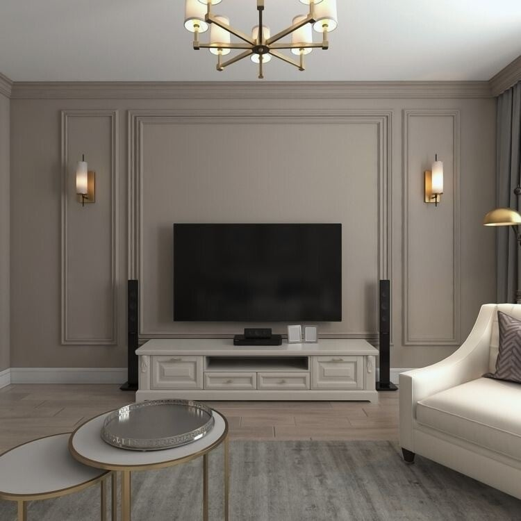
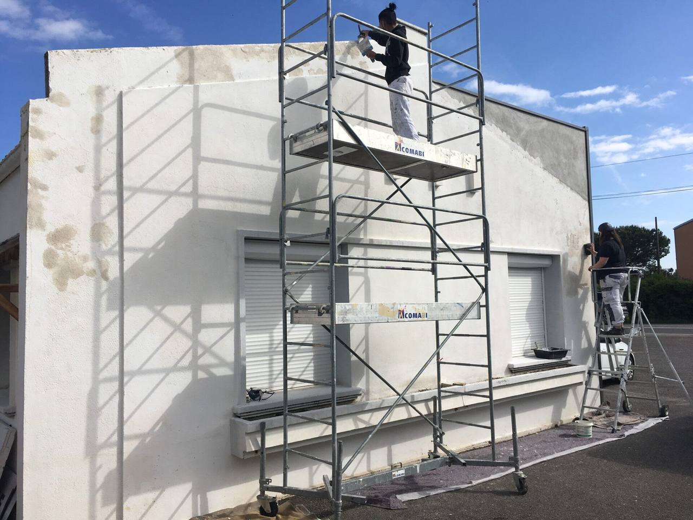
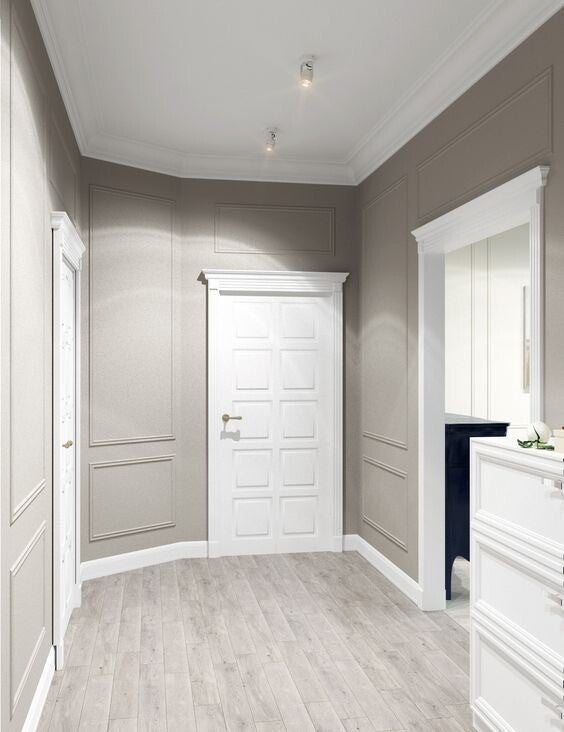

Votre peintre à Cannes, pour une finition impeccable
Intérieur, extérieur, façades et peinture décorative. Depuis 2007, AB DESIGN prépare, peint et rend les chantiers nets, dans le respect du détail et des délais.
- Artisan peintre depuis 2007
- Intérieur · extérieur · décoration
- Devis gratuit · Cannes & 20 km
« Excellent peintre. Très ponctuel, travail sérieux. Je le recommande fortement. Il est à l'écoute des besoins et très arrangeant. Quand il part tout est propre. »
Mario Ferrard, avis Google
De la sous-couche à la dernière finition
Quatre familles de travaux et une signature décorative, une même exigence : supports préparés, teintes posées au bon nombre de couches, chantier rendu net.
-
Peinture intérieure
Murs, plafonds et boiseries repeints proprement, finitions nettes et peintures de qualité, dont des gammes écologiques.
- Murs & plafonds
- Boiseries
- Écologique
-
Peinture extérieure & façades
Ravalement et mise en peinture des façades, préparation soignée des supports et peintures résistantes aux UV et aux intempéries.
- Façades
- Anti-UV
- Préparation
-
Revêtements murs & sols
Pose de papiers peints, toiles de verre et revêtements muraux, habillage et revêtements de sol pour finir une rénovation.
- Papier peint
- Toile de verre
- Sols
-
Rénovation, décoration & second œuvre
Rafraîchissement complet d'un bien, aménagement et décoration, interventions en neuf, en rénovation ou après sinistre. Particuliers, professionnels et tertiaire.
- Neuf & rénovation
- Après sinistre
- Pros & particuliers

Peinture décorative & fresques murales
Patines, enduits décoratifs, jeux de teintes et fresques murales originales. La partie du métier où la couleur devient une finition, pensée pièce par pièce avec vous.
Le travail se juge sur la finition
Quelques chantiers réalisés en intérieur comme en extérieur. Cliquez pour agrandir. Photos transmises par l'artisan. D'autres réalisations à venir.


La bonne teinte change tout
Une couleur ne se choisit pas sur un écran. On la cale chez vous, à la lumière du lieu, avant le premier coup de pinceau, pour que le rendu soit exactement celui que vous aviez en tête.
-
Échantillons au mur
On applique vos teintes pressenties en aplats généreux, directement sur le mur concerné, jamais sur un simple bout de carton.
-
À la lumière, jour et soir
On observe la teinte évoluer du matin au soir. Une couleur juste en plein jour peut se réchauffer ou se ternir une fois les lampes allumées.
-
On valide ensemble
On arrête la teinte finale avec vous, en confiance. Vous savez précisément ce que vous obtiendrez avant qu'on lance le chantier.
Un travail propre, du devis à la dernière couche
Le sérieux d'un peintre se voit aux endroits qu'on ne regarde pas : la protection des sols, la reprise des angles, les bords nets autour des boiseries. Amine prépare chaque support avant de peindre et laisse le chantier propre en partant. C'est ce que les clients retiennent le plus.
-
Finitions soignées
Angles nets, reprises propres, surfaces régulières. Le détail fait la différence.
-
Peintures de qualité
Produits adaptés à chaque pièce et support, dont des gammes écologiques.
-
Chantier laissé propre
Protection avant, nettoyage après. « Quand il part, tout est propre. »
-
Un seul interlocuteur
Le même artisan du conseil au rendu final, sans intermédiaire.
Amine Belhadj, artisan peintre formé chez les Compagnons du Bâtiment. Le même interlocuteur, du premier rendez-vous à la réception.
À Cannes et autour, dans un rayon de 20 km
Basé à Cannes, AB DESIGN intervient sur tout le bassin cannois et l'ouest des Alpes-Maritimes. Votre commune n'est pas dans la liste ? Demandez quand même, c'est souvent à quelques minutes.
Vérifier ma commune- Cannes
- Le Cannet
- Mandelieu-la-Napoule
- Mougins
- Vallauris
- Golfe-Juan
- Antibes
- Mouans-Sartoux
- Grasse
- Pégomas
- La Roquette-sur-Siagne
- Théoule-sur-Mer
Les questions qu'on pose souvent
Une autre question ? Appelez directement, la réponse est plus rapide.
Le devis est-il gratuit ?
Oui. Le déplacement pour voir le chantier et le chiffrage sont gratuits et sans engagement, sur Cannes et les communes voisines.
Vous faites l'intérieur et l'extérieur ?
Les deux. En intérieur : murs, plafonds, boiseries et décoration. En extérieur : façades et ravalement, avec des peintures résistantes aux UV.
Quelles peintures utilisez-vous ?
Des peintures de qualité choisies selon la pièce et le support, dont des gammes écologiques quand c'est pertinent. On en parle ensemble lors du devis.
Vous faites la décoration et les fresques ?
Oui. Peinture décorative, patines, enduits et fresques murales sur mesure font partie du savoir-faire de la maison.
Neuf, rénovation, après sinistre ?
Les trois. AB DESIGN travaille pour les particuliers, les professionnels et le tertiaire, sur des projets neufs, des rénovations ou des remises en état après sinistre.
Sous quel délai intervenez-vous ?
Le devis est établi rapidement après la visite. Les délais de chantier dépendent du projet ; ils sont annoncés clairement et tenus.
Demandez votre devis gratuit
Le plus simple reste l'appel : décrivez votre projet en deux minutes et obtenez une première estimation. Vous pouvez aussi remplir le formulaire, il prépare un e-mail prêt à envoyer.
- Téléphone 06 66 02 69 89
- E-mail Abdesign064@gmail.com
- Zone & horaires Cannes & Alpes-Maritimes · lun-sam 8h-19h30